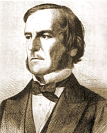

George Boole(engl. Mathematiker, 1815-1864) ist der Begründer der mathematischen Logik. Er entwickelte die nach ihm benannte boolsche Algebra. Die grundlegenden Schaltungen in Computern folgen diesen Gesetzen. Die boolsche Algebra, auch"Algebra der Logik" genannt, fußt auf der Idee der boolschen Verbände, mit denen die Verknüpfung von Mengen dargestellt werden kann.